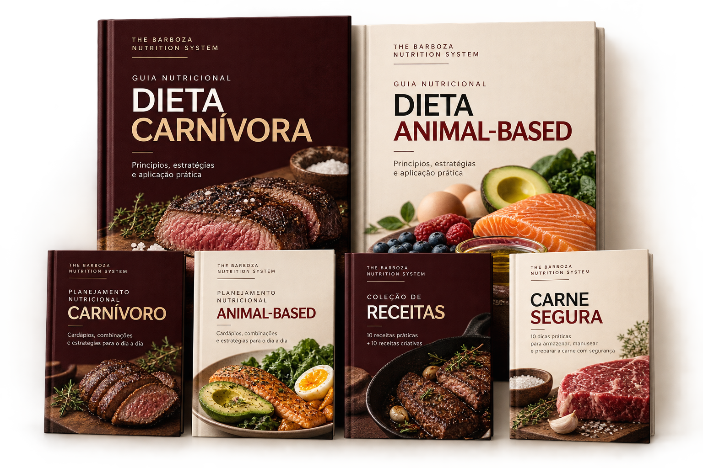
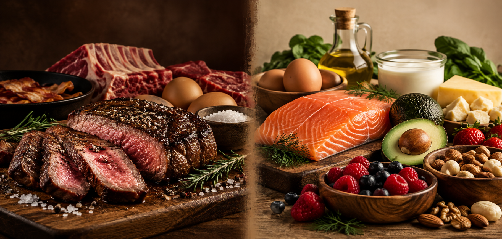

CARNIVORE DIET
A more restrictive structure.
Based exclusively on animal-sourced foods, with the diet centered around meat, eggs, fish and animal fats.
Meat
Eggs
Fish
Animal fats
THE BARBOZA METHOD • NUTRITION
CARNIVORE + ANIMAL-BASED
Two nutritional approaches brought together in one system of guides, meal plans, menus and recipes designed to turn information into a more organized and practical way of eating.
GET THE NUTRITION SYSTEM →Digital material • PDFs • One-time payment

MORE THAN JUST A DIET
Carnivore and Animal-Based nutrition both emphasize animal-sourced foods, but they are not the same approach. The Nutrition System brings both paths together so you can understand their differences and have practical resources to organize your nutrition.
TWO PATHS

CARNIVORE DIET
Based exclusively on animal-sourced foods, with the diet centered around meat, eggs, fish and animal fats.
ANIMAL-BASED DIET
Keeps animal-sourced foods as the foundation while incorporating fruit, nuts and simple dairy products when tolerated.
THE COMPLETE SYSTEM
Complementary materials designed to help you understand the approaches, plan your meals and bring your choices into the kitchen.
Fundamentals of the approach, foods used, adaptation, practical applications and important considerations.
Structured menus, meal combinations and practical references to help organize your daily nutrition.
Fundamentals of a more flexible approach, with animal proteins as the foundation and planned inclusion of other foods.
Meal examples, different menu structures and guidance for adapting your nutrition to your routine.
Carnivore and Animal-Based preparations for breakfast, meals, snacks and sweet options.
Practical guidance for purchasing, storing, thawing, preparing and preserving meat and seafood.
FROM THEORY TO THE KITCHEN
That is why the system does not stop at explaining the nutritional approaches. You also receive meal plans, meal examples and recipe collections to help you visualize how each approach can work in everyday life.
PROFESSIONAL RESPONSIBILITY
The nutritional materials in the system are signed by Anna Clara Barboza, nutritionist CRN 23102300. The content brings together guidance, examples and important considerations to present the approaches with context and responsibility.
WHO IT'S FOR
✓ You want to understand the differences between Carnivore and Animal-Based nutrition.
✓ You are looking for practical examples to organize your meals.
✓ You want to move beyond theory with menus and recipes as practical references.
✓ You value organized material signed by a nutrition professional.
THE BARBOZA NUTRITION SYSTEM
FREQUENTLY ASKED QUESTIONS
No. The Barboza Nutrition System is a digital product that is independent from The Barboza Method fight courses.
No. The materials are intended for educational and informational purposes. Energy needs, macronutrients and food choices should be individualized according to your health, routine, training and goals.
No. The system presents two different approaches so you can understand how each one is structured. Your choices and any adjustments should consider your individual needs and, when appropriate, professional guidance.
This is a digital product. After your purchase is confirmed, access is provided through the Hotmart platform.
Yes. It is a highly restrictive approach, and the material itself notes that evidence regarding long-term benefits is limited. Professional guidance is recommended to assess suitability and individual monitoring.
CARNIVORE + ANIMAL-BASED